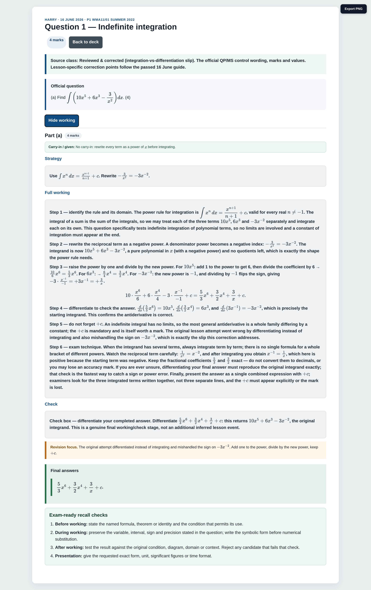
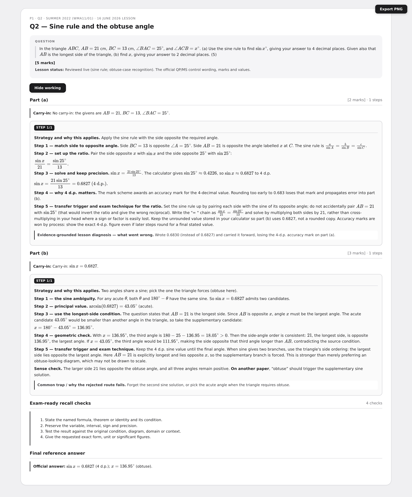
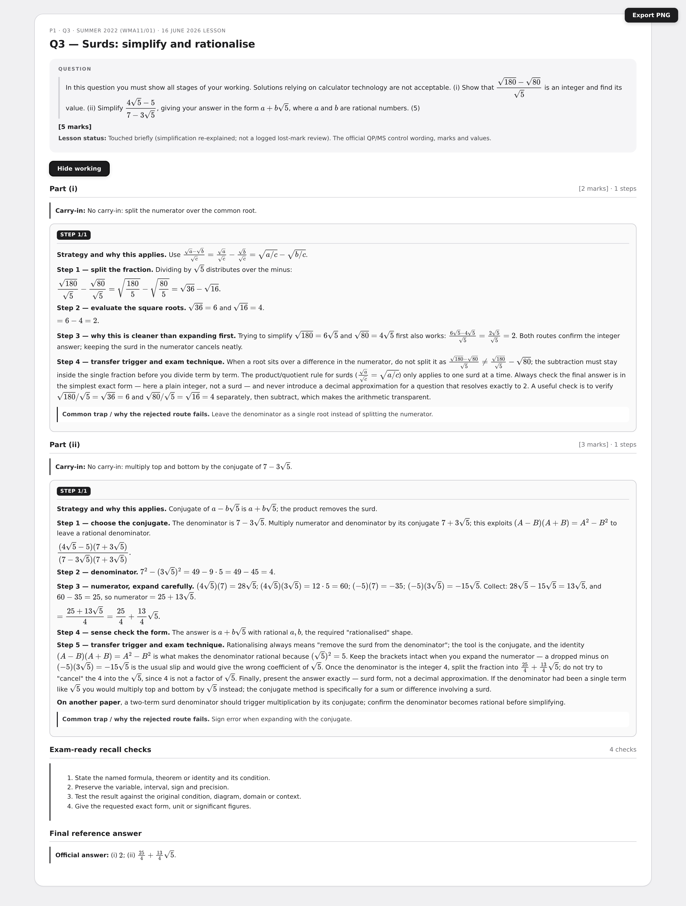
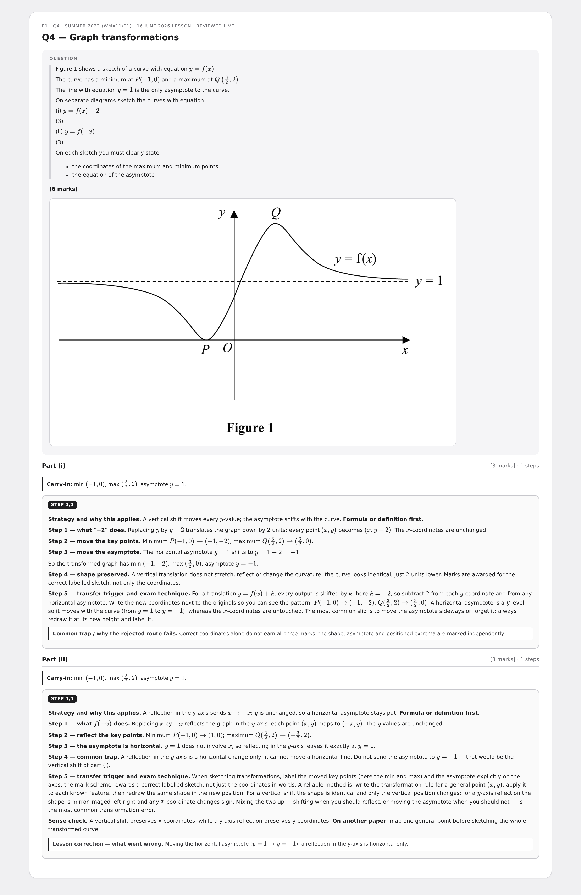
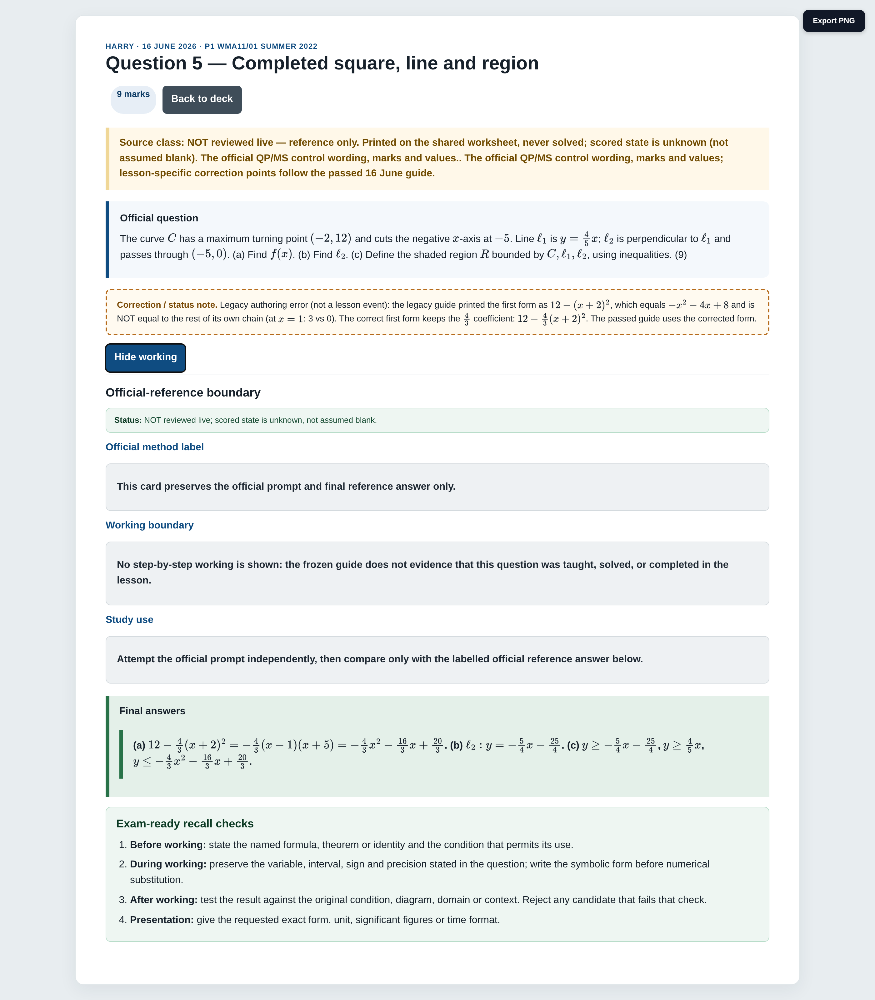
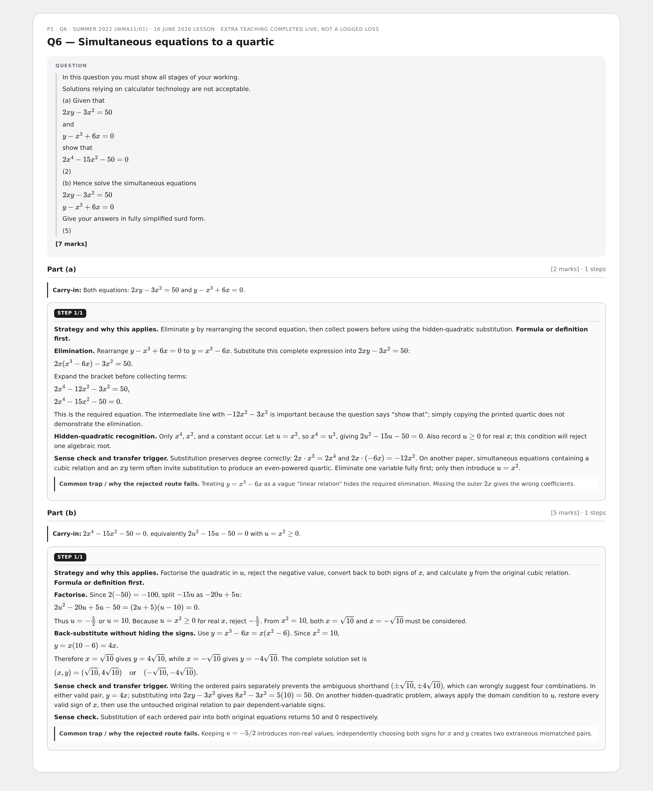
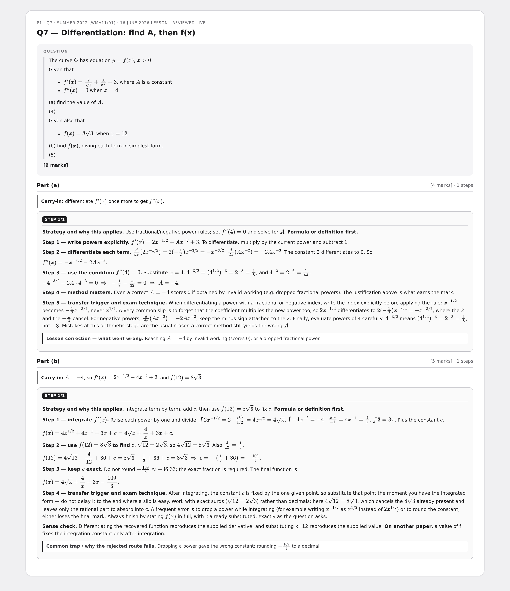
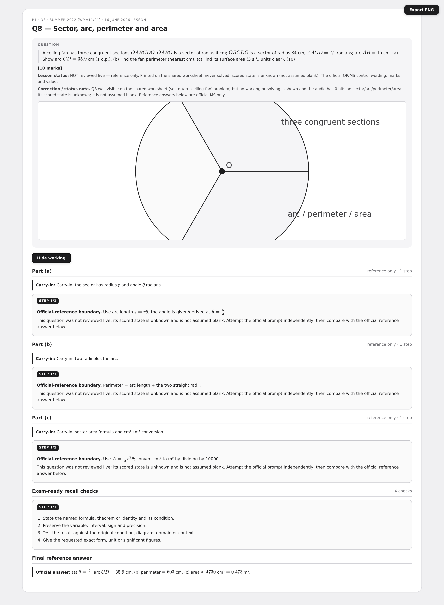
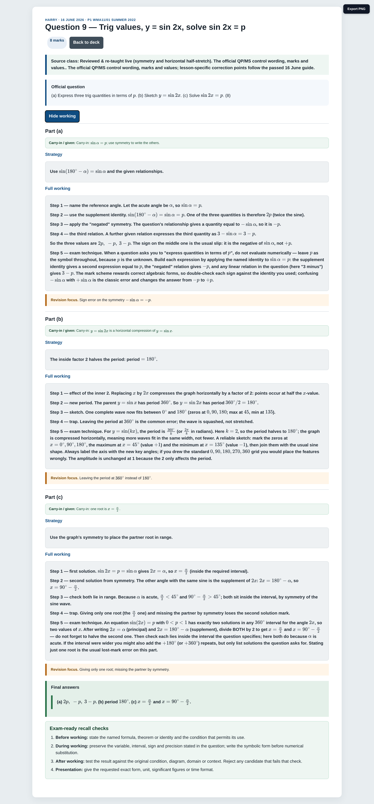
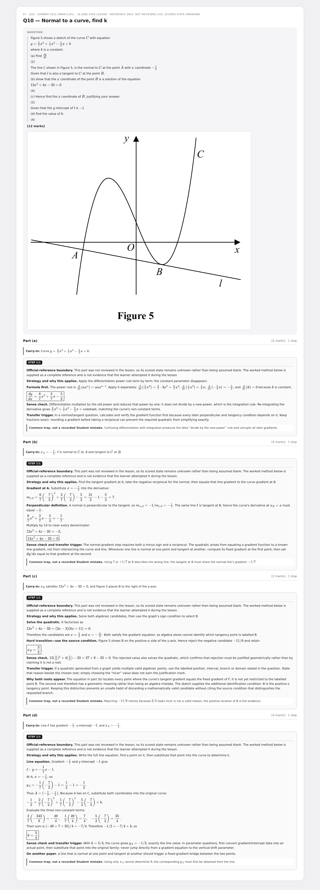

Pure P1 May 2022 — Past Paper
One image-occlusion multi-step card per sourced question. Open a card to read the full official header, parts, marks and carry-ins; grey work boxes start hidden and can be revealed. Every preview is the matching fully-revealed Chromium render.
10 cardsWMA11/01Multi-step
Q1 — Indefinite integration
Reviewed & corrected (integration-vs-differentiation slip)

Q2 — Sine rule and the obtuse angle
Reviewed live (sine rule; obtuse-case recognition)

Q3 — Surds: simplify and rationalise
Touched briefly (simplification re-explained; not a logged lost-mark review)

Q4 — Graph transformations
Reviewed live (vertical shift and reflection in the y-axis)

Q5 — Completed square, line and region
NOT reviewed live — reference only. Printed on the shared worksheet, never solved; scored state is unknown (not assumed blank)

Q6 — Simultaneous equations to a quartic
Reviewed live (extra teaching — substitution, factorise, reject)

Q7 — Differentiation: find A, then f(x)
Reviewed live (differentiation for A, then recover f)

Q8 — Sector, arc, perimeter and area
NOT reviewed live — reference only. Printed on the shared worksheet, never solved; scored state is unknown (not assumed blank)

Q9 — Trig values, y = sin 2x, solve sin 2x = p
Reviewed & re-taught live (symmetry and horizontal half-stretch)

Q10 — Normal to a curve, find k
NOT reviewed live — reference only. Printed on the shared worksheet, never solved; scored state is unknown (not assumed blank)
